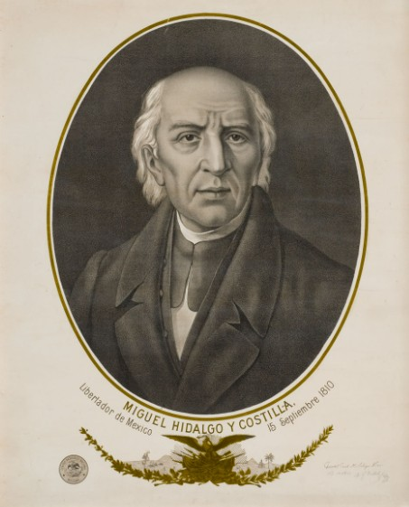
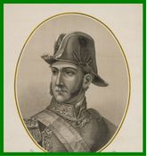
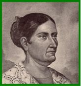
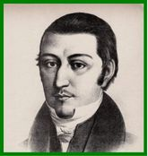
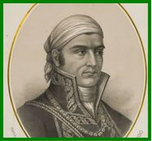
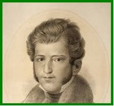
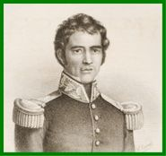
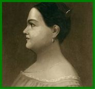
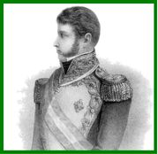

Miguel Hidalgo y Costilla
Sacerdote conocido como el "Padre de la Patria". Dio el Grito de Dolores la madrugada del 16 de septiembre de 1810 para iniciar la lucha.

Ignacio Allende
Militar y conspirador clave. Ayudó a organizar el levantamiento armado junto a Hidalgo en el inicio de la guerra.

Josefa Ortiz de Domínguez
Conocida como "La Corregidora". Avisó a los insurgentes que la conspiración había sido descubierta, lo que adelantó el inicio de la lucha.

Juan Aldama
Militar que participó en la conspiración de Querétaro y acompañó a Hidalgo y Allende en el llamado inicial.

José María Morelos y Pavón
Sacerdote y militar conocido como el "Siervo de la Nación". Redactó los Sentimientos de la Nación.

Vicente Guerrero
Insurgente que mantuvo viva la resistencia en el sur del país durante los años más difíciles de la lucha.

Guadalupe Victoria
Militar y estratega en Veracruz. Más tarde se convirtió en el primer presidente del país.

Leona Vicario
Periodista y finanzas del movimiento. Apoyó a los insurgentes con su fortuna y sirvió como informante secreta.

Agustín de Iturbide
Militar realista que pactó con Vicente Guerrero para promulgar el Plan de Iguala y entrar con el Ejército Trigarante a la CDMX.